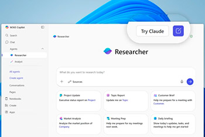
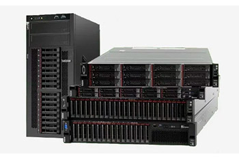

Calderón explicó que, mientras un gabinete típico en Perú consume entre 2 y 3 kilovatios (kW),
los nuevos modelos de IA pueden demandar entre 20 y 30 kW por gabinete, e incluso superar los 40 kW,
límite a partir del cual
el enfriamiento por aire ya no es viable y se requiere de refrigeración líquida.
Data Center
Microsoft amplía la elección de modelos
Los modelos Claude Sonnet 4 y Claude Opus 4.1 ahora están disponibles como opciones de modelo
en Copilot Studio, lo que le permite crear y personalizar fácilmente agentes de nivel empresarial.
"Con este lanzamiento, puede crear, orquestar y administrar agentes impulsados por modelos antrópicos
para un razonamiento profundo, automatización del flujo de trabajo y tareas agenciales flexibles.
Y con los sistemas multiagente y las herramientas de solicitud de Copilot Studio, incluso puede
combinar qué modelos se usan para tareas especializadas de Anthropic,
OpenAI o cualquiera de los modelos del catálogo de modelos de Azure”, aseguró el ejecutivo.

Copilot y Claude Sonnet 4
Noticias Internacionales
Lenovo presenta nuevas soluciones
Lenovo anunció nuevas soluciones de infraestructura de TI diseñadas para ayudar a las pequeñas y
medianas empresas (PYMES) a implementar, escalar y aprovechar fácilmente la TI moderna en la era de la IA.
Según lo señalado en el comunicado de prensa, las soluciones están diseñadas para acelerar el crecimiento y
la innovación desde el primer día con paquetes de servidores, software y opciones de precios basadas en el
consumo previamente probados y validados que ayudan a las empresas en crecimiento a avanzar más rápido desde
la decisión hasta la implementación.

Ayudar a las pymes a evolucionar
AMD y Cohere amplían su colaboración global en IA
AMD anunció que está expandiendo su colaboración global en múltiples frentes con Cohere, la principal compañía de IA empresarial
con enfoque en seguridad.Según lo señalado en el comunicado de prensa, los clientes de Cohere tendrán acceso a infraestructura
impulsada por GPU AMD Instinct para toda la gama de soluciones de IA de Cohere, incluyendo Command A, Command A Vision, Command A Translate y North.